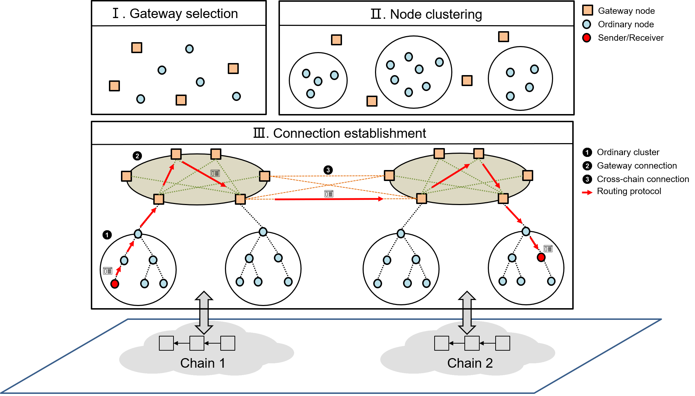
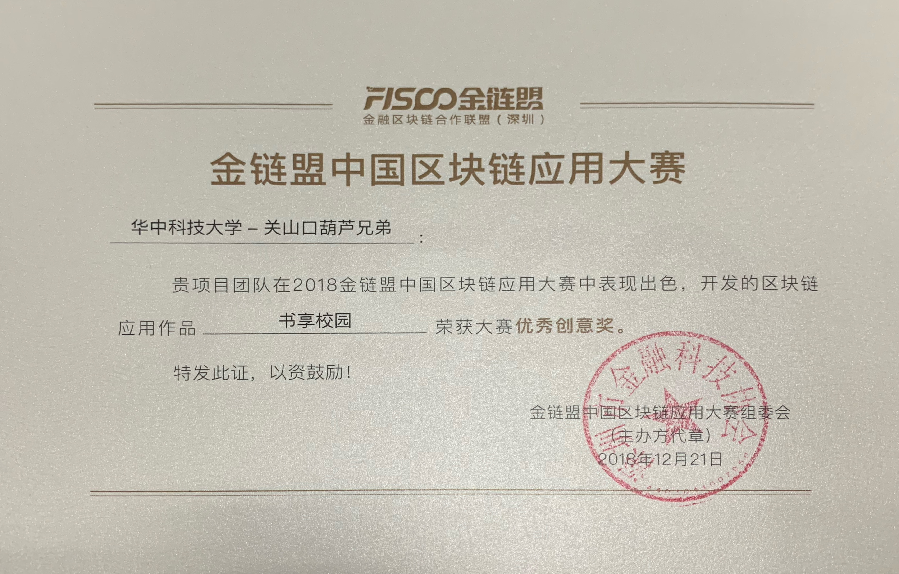
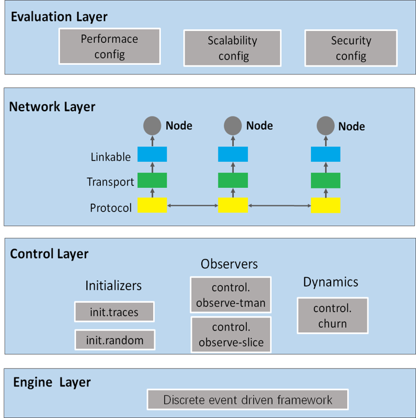

BCTS (short for blockchain technology and system) is a research group aiming to promote the scalability of the blockchain systems and explore the potential application scenario of the blockchain technology. Also, BCTS group tries to dig out values by analyzing the blockchain data, and enable cross-chain value transfer and data sharing.
BCTS group is under Cluster and Grid Computing Lab of Huazhong University of Science and Technology.

(Jidar) We propose a novel Jigsaw-like Data Reduction (Jidar) approach. Each node in Jidar only stores transactions of interest and relevant Merkle branches from the complete blocks, just like selecting several pieces from the jigsaw puzzles. A node can maintain and verify all its relevant data locally and safely without any trust assumptions. To verify the validity of a newly proposed transaction, Merkle branches relevant to the inputs are provided along with the transaction by the proposer. In view of the requirement that a user wants to cohere all the fragments stored in different nodes into a complete block, just like stitching all the pieces into a complete jigsaw-puzzle picture, a mechanism to query full data is added to Jidar.
(VINE) VINE is a novel block-less solution to support efficient and secure interactions amongst interdependent blockchains. Vine applies a block-less storage model DAG to the scenario of interoperability, which can improve the system efficiency. Moreover, Vine can greatly reduce the network and storage overhead by unifying the transaction format of different chains and enabling different chains to share the underlying network layer.
(LVQ) We propose LVQ, the first lightweight verifiable query approach that reduces the storage requirement and network overhead at the same time. To be specific, by only storing the hash of BF in headers, LVQ keeps data stored by light nodes being little. Besides, LVQ introduces a novel BMT (BF integrated Merkle Tree) structure for lightweight query, which can eliminate the communication costs of query results by merging the multiple successive BFs. Furthermore, when BF cannot work, a lightweight proof by SMT (Sorted Merkle Tree) is exploited to further reduce the network overhead. The security analysis confirms LVQ’s ability to enable both correctness and completeness validation.
(Demystifying Ethereum Account Diversity: Observations, Models and Analysis) Blockchain platform Ethereum has involved millions of accounts due to its strong potential for providing numerous services based on smart contracts. These massive accounts can be divided into diverse categories, such as miners, tokens and exchanges, which is termed as account diversity in this paper. The benefit of investigating diversity are multi-fold, including understand the Ethereum ecosystem deeper, and open the possibility of tracking certain abnormal activities. Unfortunately, the exploration of blockchain account diversity remains scarce. Even the most relevant studies, which focus on the deanonymization of the accounts on Bitcoin, can hardly be applied on Ethereum, since their underlying protocols and user idioms are different. To this end, we present the first attempt of demystifying the account diversity on Ethereum. The key observation is that different accounts exhibit diverse behavior patters, leading us to propose the heuristics for classification as the premise. We then raise the coverage rate of classification by the statistical learning model Maximum Likelihood Estimation (MLE). We collect real-world data through extensive efforts to evaluate our proposed method and show its effectiveness. Furthermore, we make an in-depth analysis on dynamic evolution of Ethereum ecosystem, and uncover the abnomal arbitrage actions. As for the former, we validate two sweeping statements reliably: (1) standalone miners are gradually replaced by the mining pools and cooperative miners; (2) transactions related to the mining pool and exchanges take up a large share of the total transactions.
(HyperP2P) HyperP2P is an efficient and interoperable network protocol for cross-chain communication. HyperP2P adopts the mainstream layer 2 solution to expand the functions of the existing chain, and realizes the interaction between different chains by running a new relay network on the original chain without modifying the existing chain. HyperP2P divides the blockchain nodes into two types of roles: gateway node, which is responsible for the cross-chain communication; and the ordinary node under the control of the gateway. The gateway node has the network connections to the counterparty gateways, and the gateways on the same chain are organized through the Chord protocol. The protocol leverages the clustering algorithm to group the ordinary nodes with low network latency and applies the spanning tree algorithm to establish the network topology in the cluster. Based on the structured network connections, the Hierarchical Cross-Chain Routing (HCCR) algorithm to transmit the message to the target destination efficiently and accurately.

HyperP2P_overview
(ShareChain) The inherent decentralized characteristics of the blockchain can achieve data sharing to a certain extent, but because the existing blockchain system has not yet formed a unified specification, the data between different blockchain systems cannot be effectively circulated and become a data island. In this paper, we propose a ShareChain to aggregate the data from different blockchain systems. The data requester can access the original data from multiple blockchain systems through a single client, and the reliability of the data can be obtained through local verification. Meanwhile, the ShareChain provides definable data access control, so that the sharing behavior of some sensitive data is protected and can be tracked. The experiments show that the ShareChain can correctly process multi-chain data and complete controllable data sharing and the transaction processing speed can reach 1000 TPS.

BookChain_Demo
(AMVChain) With the development of blockchain technology, modern electronic voting system leverages blockchain as underlying storage model to make the voting process more transparent, and guarantee immutability of data. However, the transparent characteristic may disclose sensitive information of candidate for all system users have the same right to their information. Besides that, the pseudo-anonymity of blockchain will lead to the disclosure of voters’ privacy and the third parties such as registration institutions involved in voting process also have possibility of tampering data. To overcome these difficulties, we apply authority management mechanism into blockchain-based voting systems. In this paper, we put forward AMVchain, a fully decentralized and efficient blockchain-based voting system. AMVchain has a three-layer access control architecture, and on each layer, smart contracts are responsible for validation and granting permissions. Linkable ring signature is adopted in the process of voting to protect ballot privacy. AMVchain also makes a tradeoff between efficiency and concurrency by introducing proxy nodes. The experiments results show that our system meets the basic requirements under the high concurrent users circumstance
(LDV) LDV is a lightweight DAG-based blockchain system designed for resource-constrained Vehicular Social Networks (VSNs). LDV provides an effective data reduction approach, to be specific, nodes only need to store their relevant interested data, and the historical data can be pruned to reduce the data redundancy. Experimental results demonstrate that LDV can save 97.13% storage space and has good scalability.
(BlockSim) A blockchain network simulator, which can be used for blockchain network protocol verification.
BlockSim has been developed with extreme scalability and support for network dynamically change in mind. It is composed of the event-driven engine, which is supported by many simple, extendable, and pluggable components (i.e., simulation-network, simulation-consensus, and simulation-data). BlockSim supports structured and unstructured Blockchain P2P network simulation. To simulate different network environments in the blockchain, developers can implement the interfaces provided by BlockSim as needed, which include topological connection, latency setting, network broadcast algorithm and so on.
